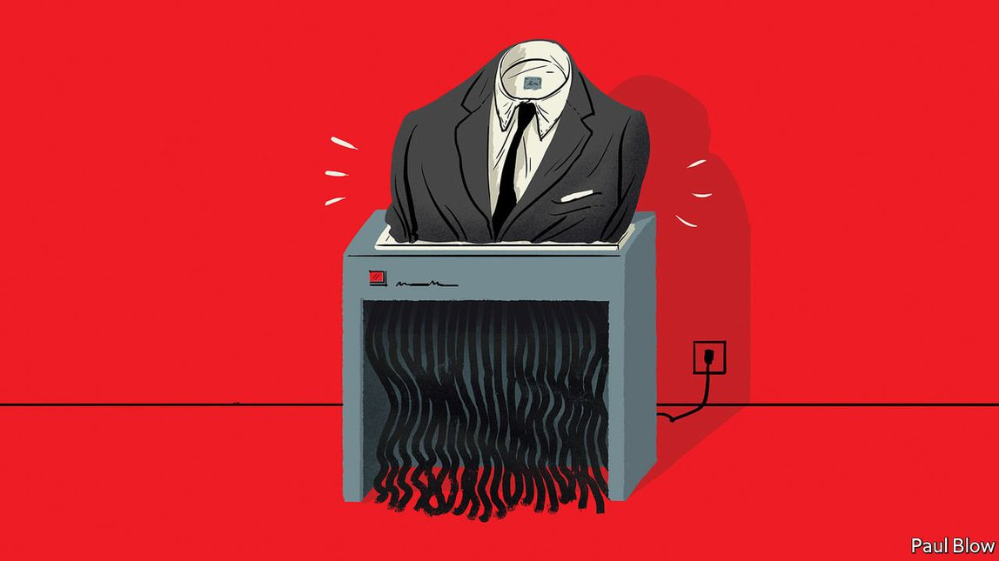

2021-09-19T15:33:08+00:00
Bartleby
巴托比
巴托比
The pandemic has refashioned corporate dress codes
疫情改变了企业着装规范
疫情改變了企業着裝規範
Suits v sweatpants
正装对决休闲装
正裝對決休閑裝

IN AN INTERNAL memo to staff in 2016 JPMorgan Chase relaxed its dress code. The American bank’s 240,000 employees could hang up their suits and don business-casual attire—once reserved for casual Fridays—all working week. Some garments remained beyond the pale (T-shirts, flip-flops, tank tops, yoga pants). But many—polo shirts, skirts (of appropriate length), dress sandals—became fair game.
在2016年给员工的一份内部备忘录中，摩根大通放宽了着装要求。这家美国银行的24万名员工可以把正装挂起来了，每个工作日他们都可以穿曾经仅限周五的商务休闲装。有些衣服仍不被接受（T恤、人字拖、背心、瑜伽裤）。但polo衫、（长度合适的）半身裙、正装凉鞋等很多服饰都可以登堂入室了。
在2016年給員工的一份內部備忘錄中，摩根大通放寬了着裝要求。這家美國銀行的24萬名員工可以把正裝掛起來了，每個工作日他們都可以穿曾經僅限周五的商務休閑裝。有些衣服仍不被接受（T恤、人字拖、背心、瑜伽褲）。但polo衫、（長度合適的）半身裙、正裝涼鞋等很多服飾都可以登堂入室了。
JPMorgan was, sartorially speaking, ahead of its time among stuffy corporate giants (turtlenecks and hoodies have long been the fashion choice of Silicon Valley titans). Others followed suit, as it were. Men’s corporate uniform—and the female power suit designed to mirror it—increasingly came to be seen as a vestige of the male-dominated offices of yore and no longer fit for purpose in a world of greater (though still imperfect) workplace equality. As more and more people ran or cycled to work, they found that changing into a full suit was impractical, since jackets folded into rucksacks tend to lose their crispness.
从着装来看，摩根大通此举在古板保守的企业巨头队伍中引领了风潮（高领衫和连帽卫衣早就在硅谷巨头中风行）。其他公司或多或少开始效仿。男性的商务正装——以及为了与之呼应的女式套装——越来越被视为是过去男性主导办公室的遗迹，在两性更为平等（虽然仍不完全平等）的职场中已不再合适。随着越来越多的人跑步或骑车上班，他们觉得到办公室再换上全套西装不切实际，因为折起来放进背包的外套往往不再平整。
從着裝來看，摩根大通此舉在古板保守的企業巨頭隊伍中引領了風潮（高領衫和連帽衛衣早就在硅谷巨頭中風行）。其他公司或多或少開始效仿。男性的商務正裝——以及為了與之呼應的女式套裝——越來越被視為是過去男性主導辦公室的遺迹，在兩性更為平等（雖然仍不完全平等）的職場中已不再合適。隨着越來越多的人跑步或騎車上班，他們覺得到辦公室再換上全套西裝不切實際，因為折起來放進背包的外套往往不再平整。
These days ties are no longer de rigueur in client meetings even for pinstriped investment bankers at Goldman Sachs. Purveyors of formal wear have fallen on hard times. Last year Brooks Brothers, which had been sewing button-down shirts since 1818, filed for bankruptcy. Last month Marks & Spencer, a British retailer, announced it would no longer sell men’s suits in more than half of its bigger stores.
如今，即使对高盛那些穿着细条纹西装的投资银行家来说，领带也不再是参加客户会议的标配了。正装供应商的日子日渐艰难。从1818年就开始生产正装衬衫的布克兄弟（Brooks Brothers）去年申请了破产保护。上个月，英国零售商玛莎百货（Marks & Spencer）宣布其一半以上的大型门店都将不再销售男士西装。
如今，即使對高盛那些穿着細條紋西裝的投資銀行家來說，領帶也不再是參加客戶會議的標配了。正裝供應商的日子日漸艱難。從1818年就開始生產正裝襯衫的布克兄弟（Brooks Brothers）去年申請了破產保護。上個月，英國零售商瑪莎百貨（Marks & Spencer）宣布其一半以上的大型門店都將不再銷售男士西裝。
As the pandemic completely decoupled work and presence in the office, employees at many companies switched into something even less starchy. Unlike JPMorgan, however, most have not put any guidelines in place as to what is and isn’t appropriate. Although the Delta variant is forcing companies to delay a return to the office, that day will come. When workers are back at their desks, at least some of the time, new sartorial rules may be required.
由于疫情已使得工作与办公室坐班完全脱钩，许多公司的员工都换上了愈发不正式的衣服。然而，与摩根大通不同的是，大多数公司都没有制定任何规范，说明哪些着装合适，哪些不合适。尽管德尔塔变种病毒迫使企业推迟回归办公室，但那一天终将到来。当员工回到他们的工位上——至少在有些时候——可能就需要新的着装规范。
由於疫情已使得工作與辦公室坐班完全脫鉤，許多公司的員工都換上了愈發不正式的衣服。然而，與摩根大通不同的是，大多數公司都沒有制定任何規範，說明哪些着裝合適，哪些不合適。儘管德爾塔變種病毒迫使企業推遲回歸辦公室，但那一天終將到來。當員工回到他們的工位上——至少在有些時候——可能就需要新的着裝規範。
Much has been written about what people wore on Zoom calls during lockdowns (and what they did not wear: some retailers report that tops significantly outsold trousers in the past year and a half). Fashion designers like Giles Deacon in Britain have launched “work from anywhere” fashion collections, aiming for slightly looser-cut clothing that nevertheless looks smart. Two Japanese companies, Aoki and Whatever Inc, created pyjama suits—a hybrid of a suit and soft, comfy loungewear—perfect for the video conference attended from home. Aoki uses the same fabric as pyjamas but with a suit-like cut. Whatever Inc’s WFH Jammies are “business on the top, loungewear on the bottom”.
已经有很多文章讨论封锁期间人们上Zoom开会时都穿了什么（以及没穿什么：一些零售商的数据显示，过去一年半上衣的销量明显超过了裤子）。英国的吉尔斯·迪肯（Giles Deacon）等时装设计师推出了“灵活办公”时装系列，打造剪裁略微宽松但看来仍干练精神的服装。青木（Aoki）和Whatever Inc两家日本公司创造了睡衣套装，这种套装把西装和柔软、舒适的家居服混合在一起，非常适合在家参加视频会议时穿着。青木所用面料与睡衣相同，但剪裁类似于西装。Whatever Inc的WFH Jammies系列是“上半身正式，下半身居家”。
已經有很多文章討論封鎖期間人們上Zoom開會時都穿了什麼（以及沒穿什麼：一些零售商的數據顯示，過去一年半上衣的銷量明顯超過了褲子）。英國的吉爾斯·迪肯（Giles Deacon）等時裝設計師推出了“靈活辦公”時裝系列，打造剪裁略微寬鬆但看來仍幹練精神的服裝。青木（Aoki）和Whatever Inc兩家日本公司創造了睡衣套裝，這種套裝把西裝和柔軟、舒適的家居服混合在一起，非常適合在家參加視頻會議時穿着。青木所用面料與睡衣相同，但剪裁類似於西裝。Whatever Inc的WFH Jammies系列是“上半身正式，下半身居家”。
That is not to say that business-casual Fridays have given way to athleisure work weeks. Indeed, some workplaces are already experiencing a backlash against informality. In 2017 Britain’s House of Commons decided that male MPs were no longer required to wear ties when attending debates; previously they could go tieless only on hot summer days. But at the beginning of September this year Sir Lindsay Hoyle, the Speaker, announced that he expected all parliamentarians to smarten up. Jeans, chinos and sleeveless tops are out.
这并不是说周五的商务休闲风已经让位给了整周的运动休闲风。事实上，一些职场已经开始扭转非正式着装的势头。2017年，英国下议院决定不再要求男性议员在参加辩论时系领带，以前只在炎热的夏天允许不系。但今年9月初，议长林赛·霍伊尔（Lindsay Hoyle）宣布他期望所有议员都好好穿戴。牛仔裤、卡其裤和无袖上衣都退场了。
這並不是說周五的商務休閑風已經讓位給了整周的運動休閑風。事實上，一些職場已經開始扭轉非正式着裝的勢頭。2017年，英國下議院決定不再要求男性議員在參加辯論時系領帶，以前只在炎熱的夏天允許不系。但今年9月初，議長林賽·霍伊爾（Lindsay Hoyle）宣布他期望所有議員都好好穿戴。牛仔褲、卡其褲和無袖上衣都退場了。
Looked at in the aggregate, individuals’ clothes speak to more than just personal preferences. People’s sartorial choices add up to a zeitgeist. It is no accident that the cheerful glitz of the 1920s came right after the despondency of the first world war and the Spanish flu. Today’s tailoring brands hope that when the pandemic recedes at last male and female professionals will feel a renewed desire to dress up.
集合起来看，个人穿什么不仅仅体现了个人喜好。每个人的着装选择合在一起就构成了一个时代的精神面貌。上世纪20年代的活泼华丽风紧跟在一战和西班牙流感时期的悲观消沉后出现，这绝非偶然。今天的时尚品牌希望，等到疫情最终退去，不论男女，专业人士们会重新燃起精心着装的欲望。
集合起來看，個人穿什麼不僅僅體現了個人喜好。每個人的着裝選擇合在一起就構成了一個時代的精神面貌。上世紀20年代的活潑華麗風緊跟在一戰和西班牙流感時期的悲觀消沉後出現，這絕非偶然。今天的時尚品牌希望，等到疫情最終退去，不論男女，專業人士們會重新燃起精心着裝的慾望。
So does Bartleby. Like Sir Lindsay, she would recommend that employees maintain a degree of formal presentation. Yes, some people can pull off a dishevelled look—but not everyone. Dressing with taste and elegance does not have to involve designer clothes or expensive watches. It signals commitment and seriousness. A freshly laundered, crisp shirt announces to the world that you have made an effort; a tracksuit does not.
本专栏作者也是这么想。和林赛议长一样，她会建议员工着装保留一定程度的正式。是的，有些人可以驾驭不修边幅的风格，但不是每个人都能做到。有品位的、优雅的着装不一定需要设计师品牌服装或高档手表。这样的着装传达出敬业和认真。一件干净熨贴的衬衫向全世界宣告你用了心，一身运动服可没这效果。
本專欄作者也是這麼想。和林賽議長一樣，她會建議員工着裝保留一定程度的正式。是的，有些人可以駕馭不修邊幅的風格，但不是每個人都能做到。有品位的、優雅的着裝不一定需要設計師品牌服裝或高檔手錶。這樣的着裝傳達出敬業和認真。一件乾淨熨貼的襯衫向全世界宣告你用了心，一身運動服可沒這效果。
And if going to the office is a ritual, styling an outfit can be a pleasure, not a chore. The way one dresses is part of his or her self-expression. It also separates the public and the private. Peeling off formal office clothes and slipping into something cosy marks a daily transition from work to non-work. That line was blurred during lockdowns and could do with some sharpening. A man in a suit and tie is a man loosening his tie at the end of the day.
而如果去办公室是一种仪式，那么搭配衣服可以是一种乐趣，而非一件苦差。一个人的着装方式是自我表达的一部分。它还能在公共和私人生活之间划出界限。脱掉在办公室的正装，换上舒适的衣服，标志着每天从工作到非工作时间的过渡。这道界限在封锁期间变得模糊，很需要明确一些。一个男人穿西装打领带，也意味着他将在傍晚松开领带。
而如果去辦公室是一種儀式，那麼搭配衣服可以是一種樂趣，而非一件苦差。一個人的着裝方式是自我表達的一部分。它還能在公共和私人生活之間划出界限。脫掉在辦公室的正裝，換上舒適的衣服，標誌着每天從工作到非工作時間的過渡。這道界限在封鎖期間變得模糊，很需要明確一些。一個男人穿西裝打領帶，也意味着他將在傍晚鬆開領帶。